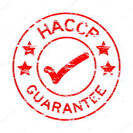

HACPP
In seguito ad un sopralluogo tecnico in materia di sicurezza alimentare, lo staff tecnico di WPS 231,
- Verifica l’esistenza e la validità della documentazione obbligatoria quali ad esempio la DIA Sanitaria, la SCIA, etc.
Successivamente a quanto rilevato in loco, redige un manuale sulla sicurezza alimentare e procede ad effettuare dei campionamenti su matrici alimentari, su acqua potabile e sulle superfici.
WPS 231, inoltre, organizza i corsi di formazione per personale alimentarista in abolizione del vecchio libretto sanitario.